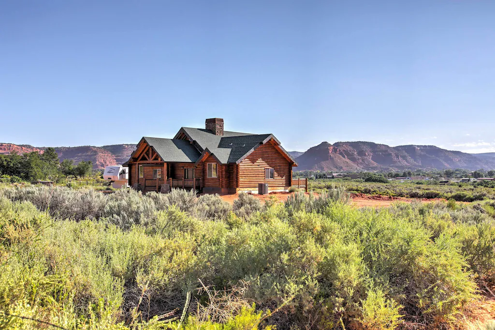

Moqui Cave is a historical cave just on the outskirts of Kanab Utah
Houstons Restaurant is a locally run restaurant with a western feel
Honeys Marketplace is locally run and it is 1 of 2 grocery stores in Kanab
Escobars is another locally run restaurant
Kanab Utah is know as "Little Hollywood" due to many films being produced there
Peekaboo slot canyon is one of Kanabs many wonders
The Wave is a beautiful hike with some interesting rock formations
Toadstools is another hike with interesting rock formations

There are numerous vacation rentals in Kanab
The Jackson Flat Reservoir is perfect for cooling down
The Kanab City Park is a great place for the kids
The Belly of the Dragon is a long stretching cave just outside of Kanab Utah